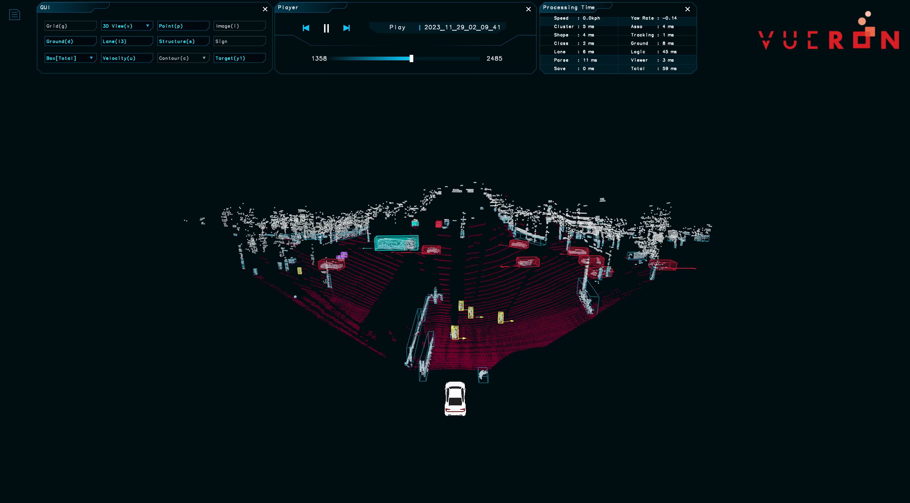
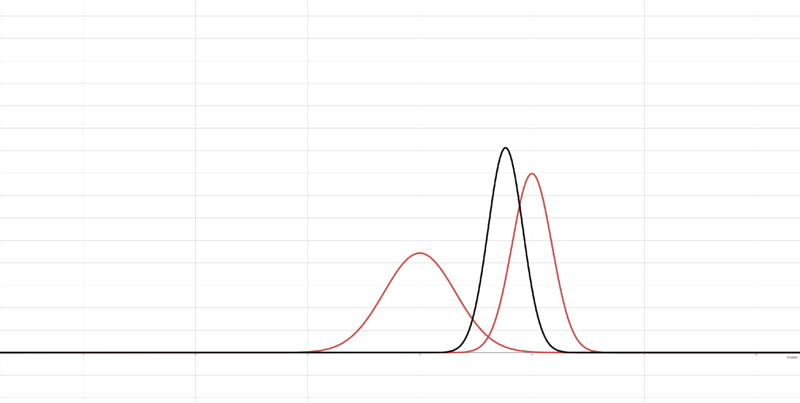
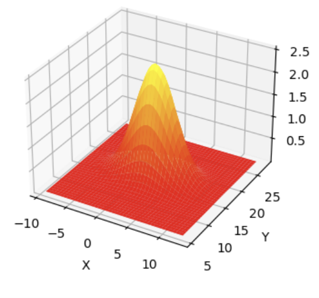
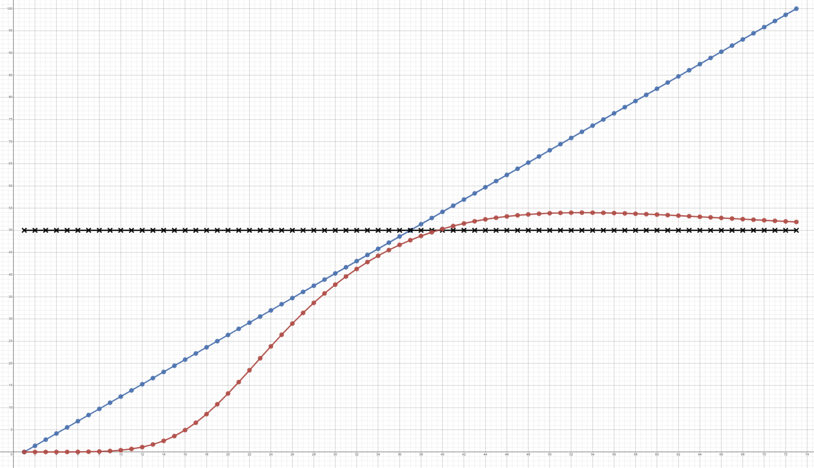

Kalman Filter v1.4 발표 자료 검토 노트
이 글은 내가 만든 Kalman filter v1.4.pptx 자료를 다시 읽으면서, 내용이 맞는 부분과
표현을 더 정확히 바꾸면 좋은 부분을 정리한 노트다. 전체 흐름은 MOT에서 왜 tracking과 velocity
estimation이 필요한지에서 출발해, Kalman filter의 prediction/update와 Q/R 튜닝으로 이어진다.

1. 자료의 큰 흐름은 맞다
발표 자료의 문제 정의는 좋다. 단순히 현재 frame의 detection box만 보면 속도를 안정적으로 구하기 어렵고, 과거 frame의 객체와 현재 frame의 객체를 연결하는 data association이 필요하다. 이 연결이 된 뒤에도 위치 차분만으로 속도를 계산하면 LiDAR/검출 노이즈가 속도에 크게 증폭될 수 있다.
특히 dt가 작을 때 위치 오차가 속도 오차로 크게 증폭된다는 문제 제기는 정확하다.
예를 들어 위치 오차 1 m를 dt = 0.1 s로 나누면 속도 오차가 10 m/s까지 커진다.
Kalman filter를 쓰는 이유를 "위치를 부드럽게 만들기 위해서"가 아니라 "상태와 불확실성을 함께 추정해
속도를 안정화하기 위해서"로 연결한 점이 좋다.
2. Kalman filter는 recursive Bayesian estimator로 보면 된다
자료에서 말한 "재귀 필터" 설명은 맞다. Kalman filter는 이전 posterior를 다음 시점의 prior로 넘기고, 새 measurement가 들어오면 likelihood와 결합해 새로운 posterior를 만든다.
previous posterior -> prediction -> prior
prior + measurement likelihood -> update -> posterior선형 시스템과 Gaussian noise라는 가정이 붙으면, 이 Bayesian filtering 과정이 평균 벡터와 공분산 행렬만 갱신하는 닫힌 형태의 알고리즘으로 정리된다. 이때 나온 가중치가 Kalman gain이다.
3. P, Q, R은 반드시 구분해서 써야 한다
자료에서 가장 조심해야 할 표현은 "시스템 상태의 불확실성을 Q라고 표현"하는 부분이다. 더 정확히는
P가 현재 추정 상태의 오차 공분산이고, Q는 process noise covariance다.
x: 실제 상태. 예를 들어 위치와 속도.x_hat: 우리가 추정한 상태의 평균.P:x_hat이 실제 상태에서 얼마나 틀릴 수 있는지에 대한 추정 오차 공분산.Q: motion model 또는 process model이 한 step 진행될 때 새로 들어오는 불확실성.R: measurement가 가진 센서/검출 오차 공분산.
즉 "상태가 Gaussian이다"라고 말할 때 실제 구현에서는 x ~ N(x_hat, P)처럼 상태 추정값과
오차 공분산을 함께 들고 간다는 의미다. Q는 상태 자체의 공분산이라기보다 예측 단계에서
P를 키우는 추가 불확실성이다.

4. "가우시안 분포의 합"은 표현을 조금 고치면 좋다
자료의 31-32쪽에서 예측 후 분포가 넓어진다는 설명은 맞다. 다만 "두 가우시안 분포를 더한다"는 말은 발표에서 오해를 만들 수 있다. Kalman prediction에서 하는 일은 보통 다음 식이다.
x_k = A x_{k-1} + w
w ~ N(0, Q)여기서 이전 상태 추정이 Gaussian이고 process noise도 독립 Gaussian이면, 선형 변환과 독립 noise의 합으로 예측 상태도 Gaussian이 된다. 공분산은 다음처럼 갱신된다.
P_k^- = A P_{k-1} A^T + Q따라서 이 부분은 "분포 값을 pointwise로 더한다"라기보다, "상태 랜덤변수와 독립 Gaussian noise를 더하기 때문에 covariance가 더해진다"라고 설명하면 더 정확하다.
5. Update는 Gaussian prior와 likelihood의 곱으로 이해할 수 있다
자료의 Bayes filter 설명은 핵심을 잘 잡고 있다. 예측된 상태 분포가 현재 시점의 prior가 되고, measurement가 주어졌을 때의 likelihood를 곱하면 posterior가 된다.
posterior ∝ likelihood * prior선형 Gaussian 조건에서는 prior와 likelihood의 곱도 Gaussian이 된다. 새 평균은 더 작은 불확실성을 가진 쪽에 더 가까워지고, 새 공분산은 정보가 결합되면서 줄어든다.

6. Kalman gain은 low-pass filter의 alpha를 자동으로 정하는 관점과 연결된다
1차 저역통과 필터는 새 측정값을 얼마나 반영할지 alpha를 사람이 정한다. Kalman filter에서는
이 역할을 Kalman gain이 한다.
x_hat_k = x_hat_k^- + K_k (z_k - H x_hat_k^-)
K가 크면 measurement를 더 많이 믿고, K가 작으면 prediction을 더 많이 믿는다.
이 값은 P와 R의 상대적 크기에서 자동으로 계산된다. 그래서 Kalman gain을
"상황에 따라 변하는 alpha"로 이해하는 직관은 좋다.
7. 2D Gaussian으로 속도를 추정하는 설명도 좋다
위치만 추정하면 1차원 Gaussian으로 설명할 수 있지만, 위치와 속도를 함께 상태로 두면 2차원 이상의 Gaussian이 된다. 이때 공분산의 off-diagonal 항은 위치 오차와 속도 오차의 상관관계를 표현한다.
MOT에서 속도는 직접 측정하지 않아도, 위치 측정이 반복해서 들어오고 motion model이 위치와 속도를 연결하면 update 과정에서 속도 성분도 같이 보정된다. 이 부분은 자료의 49-51쪽 흐름과 잘 맞는다.

8. Q를 키우면 빨라지지만, 무조건 좋은 것은 아니다
자료의 실험 파트에서 Q를 키울수록 추정 속도가 실제 변화에 빠르게 따라가는 현상은 맞다.
Q가 커지면 prediction의 불확실성이 커지고, 결과적으로 update에서 measurement를 더 많이
반영하는 방향으로 Kalman gain이 커지기 쉽다.
다만 "Q를 계속 키우면 발산한다"는 표현은 조금 조심하면 좋다. 선형 Kalman filter 자체가 항상 수학적으로
발산한다고 말하기보다, 너무 큰 Q는 measurement noise를 실제 움직임처럼 따라가게 만들어
추정값이 흔들리거나, 모델/수치 조건에 따라 불안정한 결과를 만들 수 있다고 표현하는 편이 더 정확하다.

9. 결론 슬라이드의 방향은 실무적으로 타당하다
자료의 마지막 결론은 좋다. 실제 MOT에서는 고정된 Q, R만으로 모든 상황을 처리하기
어렵다. Occlusion, LiDAR noise, detection confidence, 객체의 급가속/선회 같은 상황에 따라 noise covariance나
motion model을 바꾸는 접근이 필요하다.
- Detection confidence가 낮으면
R을 키워 measurement 반영을 줄일 수 있다. - 객체가 급가속하거나 선회하면 constant velocity model보다 constant acceleration, CTRV, IMM 등을 검토할 수 있다.
- Data association이 틀리면 Kalman filter가 아무리 좋아도 추적이 틀어질 수 있으므로 gating과 association 품질이 중요하다.
- Outlier가 잦으면 Mahalanobis gating, robust update, track management가 필요하다.
수정하면 더 좋은 표현
- "시스템 상태의 불확실성을 Q"보다는 "
P는 추정 오차 공분산,Q는 process noise covariance"로 구분한다. - "가우시안 분포의 합"은 "선형 변환된 Gaussian 상태와 독립 Gaussian noise의 합"이라고 설명한다.
- "Q 증가 시 발산"은 "반응성은 증가하지만 noise 추종과 불안정성이 커질 수 있음"으로 완화한다.
- "첫 관측에서는 추정하지 않는다"는 구현 선택에 가깝다. 초기화 방식에 따라 첫 관측부터 posterior를 둘 수도 있다.
- Kalman filter의 성능은 filter 수식만이 아니라 data association, measurement definition, gating에 크게 의존한다고 덧붙인다.
내가 이해한 핵심
- Kalman filter는 단순 smoothing이 아니라 상태와 불확실성을 함께 재귀적으로 추정하는 Bayesian filter다.
- Prediction에서는 motion model 때문에 평균이 이동하고, process noise 때문에 공분산이 커진다.
- Update에서는 measurement likelihood와 prior가 결합되며, Kalman gain이 prediction과 measurement의 가중치를 정한다.
- MOT 속도 추정에서는 작은 위치 오차도 속도 오차로 크게 증폭되므로, state estimation 관점이 필요하다.
- 실무에서는 Q/R 튜닝, motion model 선택, data association이 필터 수식만큼 중요하다.